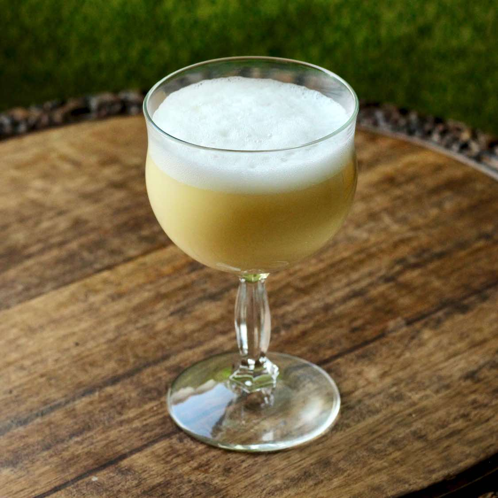

The Tamagozake cocktail is more commonly known as a home remedy for the common cold throughout Japan. Most Japanese swear by it as being an effective cure, however it is unknown whether it is a result of tradition or habit inducing the placebo effect. The Sake is supposed to give a good nights sleep and the egg white is said to strengthen the immune system and thus help cure the cold. The name translates to "egg-snake", and outside of Japan the drink is refered to as snake-nog due to its resemblance to egg nog.
Break the egg into a small bowl and mix with the sugar well. Heat up the Sake in a small pot over a low heat. Whisk in a little bit if the hot Sake into the egg mixture. Gradually pour the rest of the Sake into the egg whilst whisking. Adding the Sake too quickly can cause the egg to coagulate. Mix well until the texture becomes foamy. Pour into chosen glass.